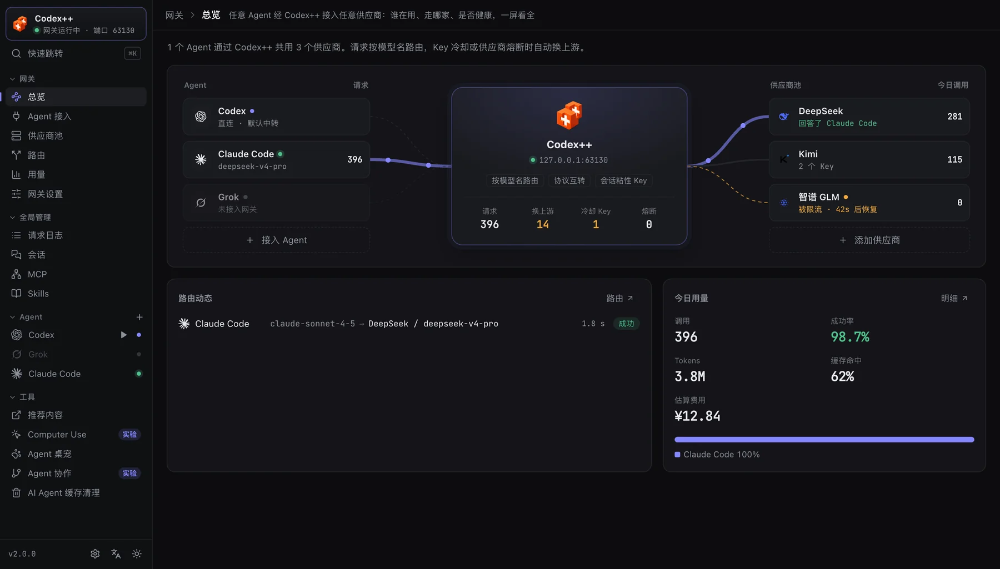
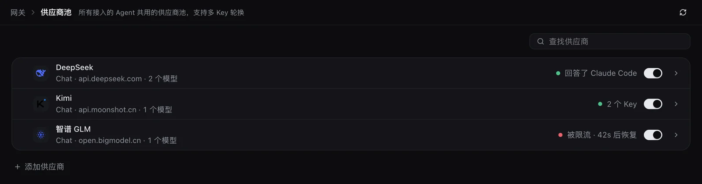
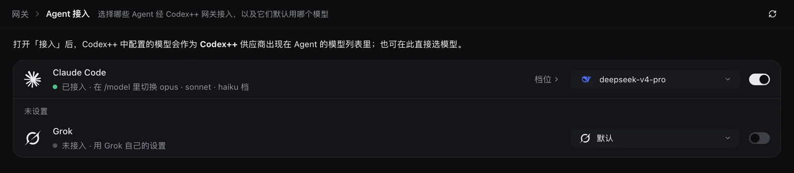
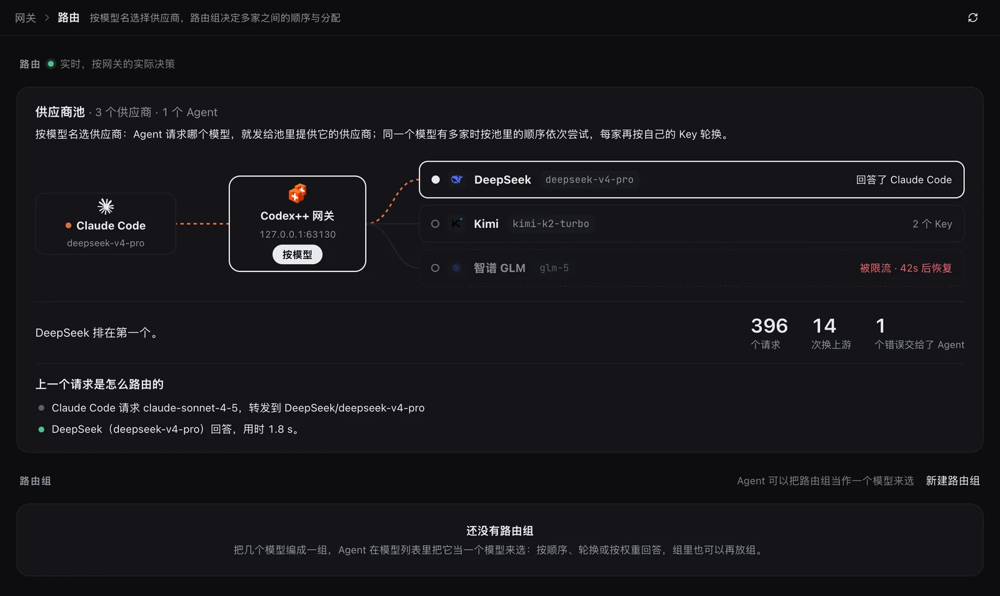
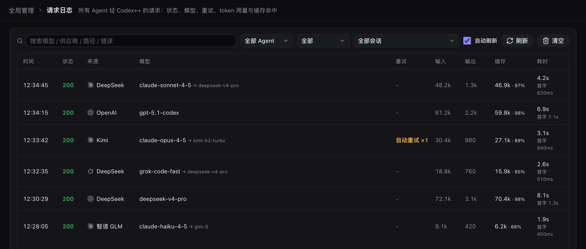
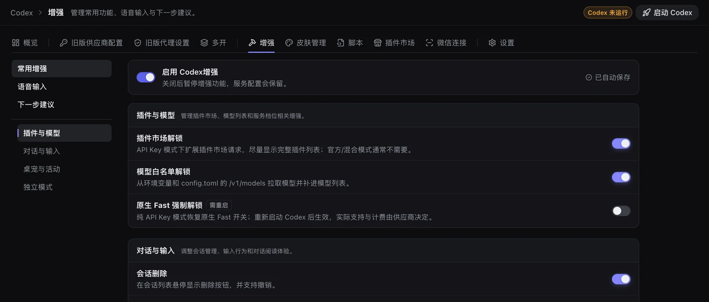
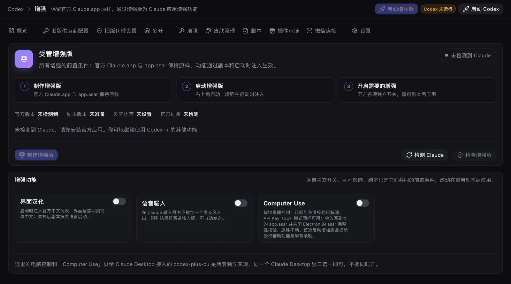
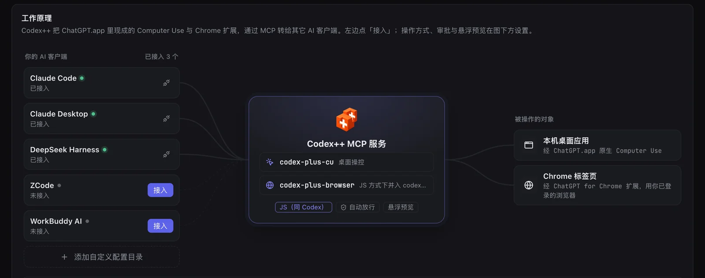
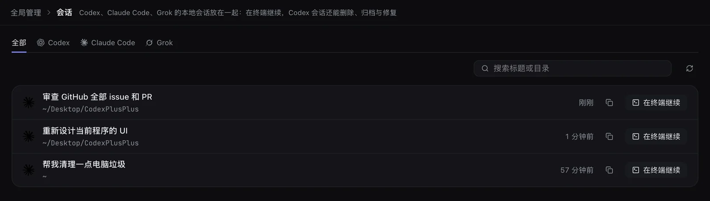

00 · BEFORE YOU START
开始之前
Codex++ 是一个本地运行的管理器，它本身不提供模型，而是帮你把已经装好的 Agent 客户端和你自己的供应商连起来，再给它们加上官方没有的功能。它不会修改任何官方应用的安装文件。
你需要准备
- 一台 Windows（x64）或 macOS（Apple Silicon / Intel）电脑。Computer Use、自动接管等少数功能目前只支持 macOS，文中会单独标出。
- 至少一个 Agent 客户端：Codex 桌面版（ChatGPT 桌面应用）、Claude Code、Claude Desktop 或 Grok CLI，用哪个装哪个。
- 一个模型来源：任意兼容的 API Key（模型厂商或中转服务商），或者 ChatGPT、GitHub Copilot、SuperGrok 等订阅账号。
两种用法，先选一种
网关模式
Codex++ 在本机跑一个网关，Codex、Claude Code、Grok 都指向它，共用同一份供应商池。按模型名自动选供应商，出错自动换下一家，多 Key 自动轮换。
直连模式
只管 Codex：在「旧版供应商配置」里切换官方登录、官方 + API、纯 API 或聚合供应商，Codex 直接连上游。1.x 的老用户升级后什么都不用改。
两种模式互不影响，可以随时切换。本教程以网关模式为主线，直连模式放在 后面单独介绍。
01 · INSTALL
安装与首次打开
- 下载安装包前往 GitHub Releases，按你的设备选择：
设备 安装包 Windows · x64 CodexPlusPlus-*-windows-x64-setup.exemacOS · Apple Silicon / Intel CodexPlusPlus-*-macos-universal.dmg - 安装Windows 双击
setup.exe按提示安装；macOS 打开 DMG，把 Codex++.app 拖进「应用程序」。 - 打开 Codex++首次打开会弹出半分钟的界面引导，带你认识网关、供应商池、Agent 接入等入口。跳过了也没关系，之后可以在「设置」里重新打开。
双击 Codex++ 永远打开的是管理界面，不会直接拉起 Codex。官方应用要从管理界面里启动，增强功能才会注入，见 第三步。
从 v1.5 / v1.6 的 macOS 旧版升级：旧版本只会打开 DMG，请把其中可见的 Codex++.app 手动拖入「应用程序」替换一次。v1.7 及以后的版本可以在应用内自动更新。原有配置和会话数据都会沿用。
02 · TOUR
认识界面
左侧栏按用途分成几组，左上角始终显示网关是否在运行、监听哪个端口：
| 分组 | 里面有什么 |
|---|---|
| 网关 | 总览 供应商池 Agent 接入 路由 网关设置——「任意 Agent 接任意供应商」的全部配置。 |
| Agent | Codex、Claude Code、Grok 各占一行，绿点表示已接入网关。点进去是它自己的增强、皮肤、插件、设置等页签；Codex 行的 ▶ 可以直接启动或停止 Codex。 |
| 全局管理 | 用量（统计 + 请求日志）会话 MCP Skills，一次覆盖所有 Agent。 |
| 工具 | Computer Use Agent 桌宠 Agent 协作 AI Agent 缓存清理 等与供应商无关的功能。 |
| 底部 | 版本号、整体设置（主题、配置备份、更新、日志）、界面语言与明暗切换。 |

两个省事的入口
- 快速跳转：随时按 ⌘ K（Windows 为 Ctrl K）搜索页面和常用操作。
- 托盘快捷面板：左键点系统托盘 / 菜单栏里的 Codex++ 图标，不打开主窗口也能给各 Agent 换模型、看最近请求。
03 · PROVIDERS
第一步：添加供应商
供应商池是所有 Agent 共用的模型来源。添加一次，Codex、Claude Code、Grok 都能用。
- 打开「网关 → 供应商池」，点「添加供应商」可以选三类来源：
- API Key：模型厂商的 API，或支持 Codex++ 的服务商，填 Key 即可；
- 登录订阅：ChatGPT 订阅、GitHub Copilot、SuperGrok 等，在浏览器里登录，无需密钥，和 Codex 自己的登录互不影响；
- 导入：从直连模式（旧版供应商配置）或 OpenCode 里已保存的 Key 一次导入多家。
- 确认模型和用途添加时会自动拉取上游模型列表，并按公开价格表填好价格。还可以勾选「添加后给这些 Agent 用」；都不勾也能添加，之后再在 Agent 里挑选。
- 按需细调点开一家供应商进入详情，可以：
- 添加多个 Key，网关会自动轮换、冷却和熔断；
- 按模型设置上下文窗口、思考等级和价格（窗口可按公开资料一键填）；
- 设置代理：沿用系统代理 / 单独代理 / 不使用代理（直连）；
- 设置限速：每个 Key 每分钟最多请求数、同时进行的最多请求数（默认不限）；
- 点「从上游获取」补上新模型——后台每天也会检查一次，有新模型时会提示。

ChatGPT 官方登录不能从直连模式复制过来：两边共用一个登录会互相把对方刷失效，需要在网关里单独登录一次。导入列表里会直接给出「去登录」。
04 · CONNECT
第二步：接入 Agent
打开「网关 → Agent 接入」。每个 Agent 一行：右侧开关决定它是否经网关接入，下拉框给它选默认模型。

各 Agent 的差别
| Agent | 接入后怎么用 |
|---|---|
| Codex | 模型选择器按供应商分组显示池里的模型，带思考档位和 Fast；收藏的模型显示星标。Codex 用 ChatGPT 登录时保留官方身份；还可以单独指定「会话起名」用的模型、生图模型和「替我审批」的去向，避免消耗官方额度。 |
| Claude Code | 在 Claude Code 里用 /model 切换 opus · sonnet · haiku 档，每档实际用哪个模型在「档位」里设置。上游是 Chat / Responses 协议也能用，网关会自动转换。 |
| Grok | 池里的模型出现在 Grok CLI 的模型列表里，每个模型带自己的上下文窗口。 |
接入是可逆的。接入前 Codex++ 会把 Agent 的配置文件存档；断开时只还原网关改过的那几项，其他工具在此期间改过的内容不受影响。如果某个 Agent 的配置被别的工具接管，Codex++ 会提示并提供一键重新接入。
05 · LAUNCH
第三步：启动 Codex
Claude Code、Grok 是命令行工具，接入后照常在终端里用即可。Codex 桌面版需要从 Codex++ 启动，增强功能才会注入：
- 点 Codex 页面右上角的 启动 Codex（已在运行时显示为「重启 Codex」）；
- 或者点侧栏 Codex 行的绿色 ▶。
依赖注入的设置（大部分增强、Fast 解锁等）改完后需要通过 Codex++ 重启 Codex 才生效。
习惯从程序坞 / 开始菜单打开 Codex？macOS 上可以在「Codex → 设置」里打开「自动接管官方 App」：你自己双击启动官方 App 时，Codex++ 会自动接管并注入增强。
到这里就完成了最基础的配置。下面的章节都是进阶用法，按需阅读。
06 · ROUTING
路由与模型组
网关按模型名决定把请求发给谁：
| Agent 里选的模型 | 网关怎么发 |
|---|---|
deepseek-v4-pro | 不带供应商的模型名：发给池里提供它的供应商；多家都有时自动成组，按顺序尝试，出错换下一家。 |
kimi/kimi-k2-turbo | <供应商>/<模型>：只发给指定的那一家。 |
group/<id> | 你自己建的模型组：按组的策略在成员之间分配。 |

新建模型组
在「网关 → 路由」点「新建路由组」，把几个模型编成一组，Agent 就能把它当作一个模型来选。每个组可以选择分配策略：
- 依次：答不了时按列表顺序换下一个；
- 轮换 / 按权重：把请求分摊到多家；
- 额度优先：优先用剩余额度最多的订阅账号；
- 速度优先：按最近的平均首包耗时选最快的；
- 手动：只用选中的那个成员。
成员支持通配符（例如 openrouter/*:free），上游新增的模型会自动算进来。打开「隐藏成员」后，组里的模型不再单独出现在 Agent 的模型列表里，只能通过这个组来选。
07 · USAGE
用量与请求日志
「全局管理 → 用量」有两个页签：
- 统计：余额、费用、token、缓存命中、推理与生图次数，按天的柱状图和各 Agent 占比。点明细里的一行，会跳到请求页签并自动筛好。
- 请求：每条请求的状态、实际走的供应商和模型、重试、token、缓存、估算费用与耗时。失败的请求直接显示错误原因，可以按 Agent、状态、会话和时间段筛选。

claude-sonnet-4-5 → deepseek-v4-pro 这样的映射、自动重试和首字耗时都看得见。08 · GATEWAY SETTINGS
网关设置
- 只监听本机：网关地址形如
127.0.0.1:<端口>，各 Agent 用自己的路径和本地 token 接入。觉得 token 泄露了，点「更换 token」，旧 token 立即失效。 - 多 Key 轮换：默认「同一会话固定一个 Key，出错才换」，能保住上游的提示词缓存；也可以改成「每个请求换下一个 Key」，用量更平均但缓存命中会变低。
- 默认上下文窗口：供应商池里没写窗口的模型使用这个值。
- 退出 Codex++ 时恢复直连（默认关闭）：网关只在 Codex++ 运行时可用。打开后，退出时把 Agent 切回直连，下次启动再自动指回网关。
退出 Codex++ 后，接入网关的 Agent 会连不上，重新打开 Codex++ 即恢复。如果你经常关掉 Codex++ 单独用 Agent，请打开上面的「退出时恢复直连」。安装更新前 Codex++ 总会先切回直连。
09 · CODEX
Codex 增强
点侧栏的 Codex，顶部页签里的 增强 汇集了二十多项官方没有的功能。每项都能单独开关；关掉「启用 Codex 增强」总开关后，供应商与启动管理照常可用。

常用的几项
- 用量状态栏：输入框下方显示生成速度、缓存命中率与上下文占用。
- 会话删除、导出与轮次回退：在会话列表里直接删除（可撤销）、导出 Markdown、回退到某一轮。
- 语音输入、粘贴修复、下一步建议、打字特效：让输入和阅读更顺手。
- 插件市场解锁 / 模型白名单解锁：API Key 模式下也能看到完整插件列表和自定义模型。
纯 API Key 也想用原生 Fast
- 在「Codex → 增强 → 常用增强」打开总开关和「原生 Fast 强制解锁」（默认关闭）。
- 直连模式下，在「旧版供应商配置」里为该模型设置「Fast（priority）支持」并保存。经网关接入时，Codex 的模型目录会带上 Fast 信息；模型组里每个成员都支持 Fast 时，选这个组也能开 Fast。
- 从 Codex++ 重启 Codex，在模型菜单里选择 ⚡ Fast。实际可用性与计费以供应商为准。
同一行的其他页签
- 皮肤管理：社区主题与自定义图片；
- 脚本 / 插件市场：安装社区脚本和 Codex 插件，支持卸载；
- 微信连接：扫码连接本机 Codex，出门也能派活；
- 设置：Codex 应用路径、启动参数、图片覆盖层、自动接管与安装维护。
10 · DIRECT MODE
Codex 直连模式与多开
不想经过网关、只给 Codex 换供应商时，使用「Codex → 旧版供应商配置」。四种接法独立配置、一键切换：
| 模式 | 适用场景 |
|---|---|
| 官方登录 | 使用 ChatGPT / Codex 官方账号，官方额度与插件市场。 |
| 官方登录 + API | 保留官方登录与插件入口，模型请求走兼容 API，不消耗官方额度。 |
| 纯 API | 自定义 Base URL / Key，无需官方账号。 |
| 聚合供应商 | 故障转移：多家之间失败切换与轮转；模型聚合：带 cpx-供应商ID/模型名 前缀的模型固定发往对应成员。 |
按模型设置上下文窗口
在模型列表里给模型名加窗口后缀，Codex++ 会生成 model_catalog_json，让 Codex 按当前模型使用各自的窗口；没写后缀的模型沿用供应商级配置。
# 模型列表，一行一个
deepseek-v4-pro[1M]
your-model[200K]
another-model[128000]多开
「Codex → 多开」可以为每个供应商身份启动一个隔离的 Codex 实例，互不干扰。多开只使用「旧版供应商配置」里的供应商和 Key；实例已在运行时，改配置后需要重启该实例才生效。
纯 API 和官方登录 + API 使用不同的认证位置，不要手工在两种模式之间复制 auth.json。
11 · CLAUDE
Claude 增强版
Claude Desktop 的增强通过一个「受管增强版」副本实现：官方 Claude.app 与 app.asar 保持原样，增强在副本启动时注入。
- 制作增强版在侧栏点 Claude Code 进入 增强 页，确认检测到官方 Claude 后点「制作增强版」。
- 开启需要的增强界面汉化、语音输入、Computer Use、解锁 Bash 时间限制等各自独立开关，互不影响。
- 启动增强版点右上角「启动增强版」。之后改动增强开关，需要重启副本才会应用。

增强版里的电脑控制和「工具 → Computer Use」给 Claude Desktop 接入的 codex-plus-cu 是两套独立实现，同一个 Claude Desktop 里二选一即可，不要同时开。
12 · COMPUTER USE · macOS
Computer Use 共享
Codex++ 把 ChatGPT.app 里现成的 Computer Use 与 Chrome 扩展，通过 MCP 转给其他 AI 客户端：Claude Code、Claude Desktop、DeepSeek Harness 等都能操作桌面应用和浏览器。目前仅支持 macOS。
- 授予系统权限在「系统设置 → 隐私与安全性」里给 ChatGPT 授予辅助功能和屏幕录制权限。
- 点「接入」打开「工具 → Computer Use」，在左侧客户端列表里给需要的客户端点「接入」。找不到的客户端可以「添加自定义配置目录」。
- 重启客户端接入后重启对应客户端才会加载工具。Claude Desktop 退出时会重写自己的配置，建议先完全退出再接入。

操作方式、审批（自动放行或逐次确认）与悬浮预览，在图下方的设置区调整。
13 · SUB-AGENTS
子 Agent 协作
在 Codex 对话里，直接让 DeepSeek、Claude Code 或另一个 Codex 帮你干活，结果回到同一个对话。
- 打开「工具 → Agent 协作」在「子 Agent 设置」里启用协作和需要的 Agent，选一个默认 Agent，保存。CLI 路径留空会自动发现；模型留空则沿用各 CLI 的默认模型。
- 点「一键接入并刷新」Codex++ 会把协作服务写进 Codex 的 MCP 配置并刷新工具列表。如果提示缺少连接，先用 Codex++ 启动 Codex 再点「刷新 Codex 工具」。
- 在 Codex 里直接说例如：
- 「让 DeepSeek 实现这个功能，你负责检查结果。」
- 「让 Claude Code 审核刚才的改动。」
- 「把这项调查交给默认子 Agent，完成后汇总给我。」
点名了哪个 Agent 就派给哪个，没点名才用默认 Agent；目标不可用时不会擅自换人。每个 Agent 同时只跑一个任务，单个任务最长 10 分钟。更多细节见 子 Agent 协作指南。
14 · MANAGE
会话、MCP 与 Skills
- 会话：Codex、Claude Code、Grok 的本地会话放在一起，可以查看和删除。
- MCP：统一管理 MCP 服务，按 Agent 分别启用，不用分别改各家的配置文件。
- Skills：浏览、安装和启用 Skill，支持从本地文件夹导入，同样按 Agent 启用。

15 · MORE
更多小工具
- Agent 桌宠：在 Codex 里放一只可拖动的桌宠，点一下会压扁并播放音效。图片可以从内置图库挑，也可以填自己的 https 图片地址，音效支持导入自定义音频。
- AI Agent 缓存清理：扫描 Codex、Claude 与 Codex++ 的缓存，按项查看大小后再清理。
- 配置备份与迁移：在「整体设置」里备份、迁移 Codex++ 自己的设置文件。
- 关窗轻量模式（默认关闭）：关闭主窗口时释放界面占用的内存，网关、托盘和快捷面板照常运行。
16 · FAQ
常见问题
Agent 接入网关后连不上 / 请求全部失败？
先确认 Codex++ 正在运行，左上角显示「网关运行中」。网关只在 Codex++ 运行时可用；退出后想让 Agent 直连，在「网关设置」打开「退出 Codex++ 时恢复直连」。然后到「用量 → 请求」看失败请求的错误原因，常见的是 Key 无效（401）、限流（429）或模型名在这家不存在。
启动后，为什么 Codex 里没有 Codex++ 的增强？
确认是在 Codex++ 里点「启动 Codex」打开的官方应用，或者在 macOS 上打开了「自动接管官方 App」。仍然没有时，到「Codex → 设置」检查应用路径、启动状态和诊断日志。
直连模式切换供应商后，请求为什么失败？
先在供应商详情中运行模型测试或 Provider Doctor，确认协议、Base URL、Key 与模型匹配。纯 API 和官方登录 + API 使用不同的认证位置，不要手工复制两种模式的 auth.json。
开启原生 Fast 后，为什么仍然看不到开关？
确认已经保存并通过 Codex++ 重启 Codex，且当前模型声明了「Fast（priority）支持」。此功能只恢复客户端入口，服务限制与计费仍以供应商为准。
Computer Use 接入后，客户端里为什么没有工具？
接入后需要重启对应客户端；Claude Desktop 建议先完全退出再接入。仍然没有时，在「Computer Use」页的「配置路径与自定义目录」核对客户端实际读取的目录，并确认已给 ChatGPT 授予辅助功能与屏幕录制权限。
官方应用更新后，增强还能用吗？
Codex++ 依赖官方桌面应用的页面结构、CDP 和本地数据格式，官方更新后部分功能可能需要跟随适配。遇到问题可以先单独关掉对应增强，或关闭增强总开关，供应商与启动管理不受影响。
配置、会话和日志存在哪里？
设置了 CODEX_HOME 时，Codex 主目录以该变量为准，否则是 ~/.codex：
| 数据 | 位置 |
|---|---|
| Codex 配置与登录 | ~/.codex/config.toml、~/.codex/auth.json |
| 本地数据库 | ~/.codex/sqlite/*.db |
| Codex++ 状态与日志 | ~/.codex-session-delete/ |
API Key 只保存在本机，提交反馈前请隐藏密钥与认证信息。
17 · HELP
获取帮助
遇到问题，请到 GitHub Issues 反馈，附上系统、Codex++ 版本、复现步骤与已脱敏的日志。也欢迎来 QQ 交流 4 群（1127858981）、Telegram 频道 交流使用经验。